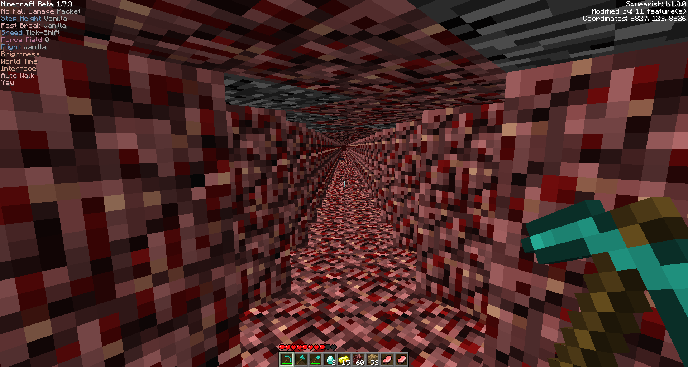

This example demonstrates the structure, styling, and formatting for a research paper. It includes headings, lists, math formulas, and code snippets.
Simple formula demonstration:
Another example using modular arithmetic:
Python snippet demonstrating a function:
def greet(name):
print(f"Hello, {name}!")
greet("World")Example unordered list:
Example ordered list:
Here’s normal text after the note to show separation.
code inside a note block.
Example image included in the paper:
Example video included in the paper:
This template demonstrates:
Date: 12/11/2025